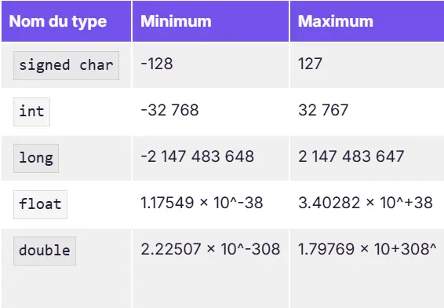
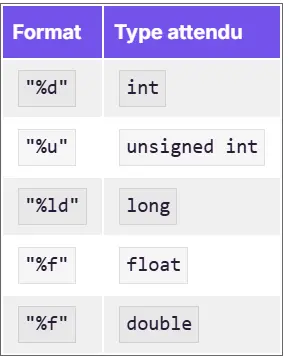
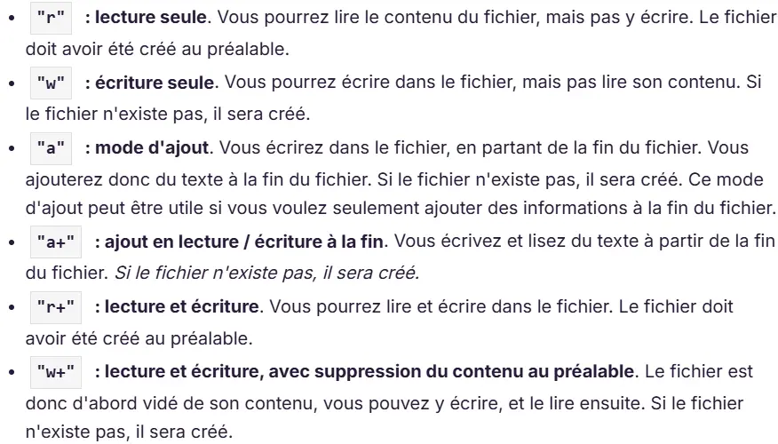

TLe langage C : Apprentissage et morpion
- POK
- 2024-2025
- temps 2
- Novice
- C
- Matthieu Dufort
Un POK ayant pour objectif d'apprendre le langage C.
Aucun prérequis particulier n'est nécessaire, mais il peut être intéressant de lire le MON de Cassandra en complément.
Pour ce POK, j'ai décidé d'apprendre un nouveau langage afin d'élargir mes compétences en développement avec un langage un peu moins intuitif que Python. Je vais me former sur l'utilisation du langage C. Pour cela, je vais partir de la documentation et construire ensuite, dans un second temps, un petit projet (probablement un morpion ou un mini-jeu de ce genre) afin de mieux le prendre en main.
Tâches
- Regarder les MON et POK traitant du sujet afin de trouver un bon moyen d'apprendre.
- Suivre un cours pour acquérir des bases sur ce langage.
- Construire des programmes pour apprendre.
- Construire un mini-jeu pour prendre en main le langage.
Sprints
Le but final de ce POK est de parvenir à comprendre du code en C et d'être capable d'écrire des programmes simples.
Sprint 1
- [x] Se renseigner sur les anciens POK et MON traitant du sujet
- [x] Choisir un cours/formation à suivre
- [x] Suivre le cours pour monter en compétence
Sprint 2
- [X] Réaliser un mini projet par moi même en langage C.
Horodatage
| Date | Heures passées | Indications |
|---|---|---|
| Vendredi 15/11 | 4H | Inventaire des POK et MON, choix du cours et début, Installation d'un compilateur |
| Samedi 16/11 | 5H | Suite du cours d'openclassrooms |
| Dimanche 17/11 | 4h | Suite du cours d'openclassrooms |
| Mardi 10/12 | 1h | Suite du cours d'openclassroom |
| Jeudi 12/12 | 2h | Suite du cours d'openclassroom |
| Vendredi 13/12 | 3h | Suite du cours d'openclassroom et initialisation du jeu de morpion |
| Samedi 14/12 | 2h00 | Build du jeu de morpion |
| Lundi 16/12 | 2h00 | Fin du jeu de morpion |
Contenu
Premier Sprint
Après avoir fait l'inventaire des POK et MON traitant du langage C, j'ai choisi de suivre le cours d'OpenClassrooms qui est fortement recommandé par Cassandra et qui lui a permis d'acquérir de bonnes bases. Je vais essayer de compléter son MON en abordant d'autres points du langage C. Je recommande donc aux futures personnes voulant apprendre ce langage de lire aussi son MON.
Ecrire du C avec VSCode
J'ai décidé de travailler, comme toujours, avec VSCode et j'ai donc installé une extension spéciale pour le C afin de faire la compilation et de déboguer (+ pouvoir écrire avec un style adapté : couleurs, etc.). Je recommande donc : C/C++. Cependant, elle n'a vite plus marché (pour la compilation) dès que j'ai réparti mon code sur plusieurs fichiers. J'ai dû ensuite compiler à chaque fois avec le terminal de commande en compilant chaque fichier .c en objet .o, puis en compilant ensemble les objets en .exe.
Pour la compilation, il est nécessaire aussi d'installer un compilateur, j'ai choisi MinGW et de rentrer ensuite son chemin (path) dans l'ordinateur et dans les options de l'extension de VSCode pour pouvoir l'utiliser.
Utiliser le compilateur installé
Utiliser le compilateur installé
Pour changer le path du compilateur dans l'extension :
- ctrl + shift + P
- C/C++ : Edit configuration (UI)
- Changer le path du compilateur pour : C:\MinGW\bin\gcc.exe par exemple si votr fichier gcc.exe de MinGW se situe la bas
Pour utiliser les lignes de code dans le terminal, il faut ajouter le path en variable d'environnement sur votre ordinateur :
- Paramètre puis propriétés systèmes
- Variable d'environnement
- Path puis modifier
- Ajouter le nouveau Path : C:\MinGW\bin\gcc.exe
Ceci fonctionne sur windows (en tout cas sur le mien 🙂)
J'ai dû perdre environ 2 heures là-dessus, le temps de configurer VS Code et mon ordinateur, n'ayant jamais vraiment utilisé auparavant un langage nécessitant une compilation avant d'être lancé. Une fois que tout marchait avec l'extension de VS Code, j'ai de nouveau rencontré des soucis 3 heures après lorsque j'ai utilisé plusieurs fichiers. Finalement, je n'ai plus pu l'utiliser (ne me demandez pas pourquoi, je ne sais toujours pas), et je suis passé directement par des lignes de code dans le terminal pour compiler avec :
> gcc -c main.c -o main.o
> gcc -c multiplication.c -o multiplication.o
> gcc main.o multiplication.o -o main.exe
Finalement, j'ai enfin pu me concentrer sur le code en parvenant a compiler les fichiers !
Infos générales
Introduction de variable et fonction
Le langage C est plus proche en écriture de Java que de Python. C'est un langage où il faut déclarer le type de chaque variable et de chaque fonction.
int variable ; //Variable pour un entier
float variable = 1.5 ; // Variable pour un floatant initialisée
int fonction(){ // Fonction retournant un entier
return 1;
}Il faut mettre un point virgule à la fin de chaque ligne d'instruction.
Voici les plages d'utilisation maximales de chacun des types, dues à l'espace de mémoire accordé : Tableau des tailles de chiffres possible en fonction du type, Openclassroom
Calcul
Pour le système de calcul standard, on retrouve les abréviations des autres langages tels que :
int variable = 2 ;
variable ++ ; // incrémente variable de 1
variable += 5 // ajoute 5 à variable
variable *= 4 // multiplie variable par 4Le nom du langage C++ découle du format de l'incrémentation en C (C = C + 1 <=> C++). Ce nom a été choisi pour évoquer l'évolution du langage C, mais en réalité, C++ et C sont deux langages distincts utilisés pour des objectifs différents.
fonction
Pour une fonction qui ne renvoie rien on utilise l'indicateur void.
L'utilisation des fonctions d'affichage dans le terminal est assez différente de ce qui est fait en Python ou en Java :
int variable ;
printf("Quelle valeur voulez vous donner à la variable ?");
scanf("%d", &variable);
printf("Vous avez donnée la valeur %d", variable);Ceci permet de demander la valeur puis d'afficher ce que l'utilisateur a écrit. On référence les variables dans l'affichage avec le % suivi du type de variable comme le tableau ci-joint :
Tableau des format en fonction du type, Openclassroom
On peut rajouter le type %s pour les chaines de caractères ou %c pour un type char.
Système de mémoire
Fonctionnement de la mémoire système
Le cours d'OpenClassrooms m'a permis d'apprendre beaucoup sur le fonctionnement de la mémoire.
Elle fonctionne sous forme de tableau avec une colonne contenant les adresses (des numéros de 1 à X) et une colonne associée contenant les espaces de stockage.
Lorsque l'on définit une variable, on demande à l'ordinateur un espace de stockage et on le réserve pour la valeur de la variable. On peut réserver cet espace en le laissant vide ou en l'initialisant directement avec une valeur, mais dans tous les cas, l'espace est réservé dès la ligne de création de la variable.
En C, il y a beaucoup de manipulations qui découlent de ce fonctionnement. Le système de définition de variables en est un exemple :
int variable;
scanf("%d", &variable); //le symbole & permet d'accéder à l'adresse de stockage de la variable
// On modifie ici la valeur dans la case associée à l'adresse de stockage de variableCe fonctionnement permet de définir des pointeurs.
Pointeur
Un pointeur consiste à définir une variable comme étant l'adresse d'une autre variable. Cela est utilisé pour modifier une variable définie dans une fonction ou dans le main à un autre endroit (autre fonction).
En effet, avec un return à la fin d'une fonction, on ne peut modifier qu'une seule variable, mais grâce au pointeur, cela n'a plus de limite.
int variable;
*pointeur = &variable ; // permet de définir le pointeur
printf("%d", pointeur); // affiche l'adresse de stockage de variable
printf("%d", *pointeur); // affiche la valeur de variableC'est en utilisant le *pointeur dans d'autres fonctions que l'on peut modifier la variable en dehors de l'endroit où elle est définie, sans avoir besoin de la retourner à la fin de la fonction.
Bilan Sprint 1
Bilan Sprint 1
J'ai vraiment bien aimé ce début de POK où j'ai pu apprendre plein de choses, autant sur le fonctionnement général d'un ordinateur que sur le code en C. J'ai découvert ce langage depuis zéro, qui demande beaucoup de rigueur, et j'ai bien aimé. J'ai par contre perdu beaucoup trop de temps pour parvenir à faire marcher la compilation du code au début et dès l'utilisation de fichiers multiples. J'espère donc que la première partie de ce compte rendu pourra bien aider les suivants à gagner du temps là-dessus. Je n'ai donc pas eu le temps de finir le cours, mais j'ai hâte de le continuer lors du prochain sprint pour passer sur du développement de mon côté et bien appliquer tout ce que j'ai appris.
Second Sprint
Suite du cours d'openclassroom
Création de structure
Il est possible de donner des formats à des variables en utilisant des structures que l'on définira dans les fichiers .h.
La structure se définit comme :
struct Coordonnees
{
int x ;
int y ;
};Il est ensuite possible d'utiliser cette structure comme un format de variable :
struct Coordonnees point;
point.x = 10;
point.y = 20;On a maintenant une variable point définie avec deux entiers et initialisée à {10, 20}.
Il est aussi possible d'utiliser les pointeurs avec des variables ayant une structure personnalisée.
Il est possible de faire un alias en utilisant la fonction typedef :
typedef struct Coordonnees CoordonneesStruct Coordonnees peut alors être remplacé par Coordonnees tout court.
De la même manière, il est possible de définir une énumération, ce qui revient à définir une liste de choix pour une variable. La variable ne peut alors prendre que les valeurs définies dans l'énumération.
enum Status
{
High, Medium, Low
}Ces valeurs peuvent être associées à des nombres.
Gestion de fichier
Dans cette partie, nous allons travailler sur la gestion de fichiers grâce a la bibliothèque stdlib et stdio. L'utilisation de fichiers stockés localement dans l'ordinateur permet de conserver les résultats du code après qu'il se soit arrêté.
Il est possible d'ouvrir un fichier de plusieurs façons :
Liste des façons d'ouvrir un fichier possible en C, Openclassroom
Faisons un exercice avec un programme qui recopie des lignes dans un fichier pour nous :
int main(int argc, char *argv[])
{
FILE* fichier = NULL; // créer le pointeur du fichier
fichier = fopen("test.txt", "w+"); // ouvre le fichier en le vidant au préalable
char ligne[240] ;
int nombreLigne = 0 ;
printf("Que devez vous recopier ? (max 238 caractères)");
fgets(ligne, sizeof(ligne), stdin); //Récupère la ligne à recopier
printf("Combien de ligne avez vous à écrire ?");
scanf("%d", &nombreLigne); // Récupère le nombre de ligne à recopier
if (fichier != NULL)
{
for (int i = 0; i < nombreLigne ; i++) // répète l'écriture de la ligne
{
fprintf(fichier, "%s",ligne); // Ecris dans le document
}
fclose(fichier); // ferme le fichier
printf("Vous avez bien recopier toutes vos lignes !");
}
else
{
printf("Veuillez créer le fichier avant d'écrire dessus.");
}
return 0;
}On utilise la fonction fgets et non scanf pour récupérer une ligne de caractères car la fonction scanf s'arrête au premier espace trouvé.
Attention : la fonction fgets enregistre aussi le saut de ligne créer par la touche entrée lors de la validation de ce que l'on veut écrire.
Voir la partie suivante pour plus d'explication sur la gestion de la mémoire avec fgets.
Dans les fichiers, on utilise la fonction fgetc pour lire un caractère ou la fonction fgets. (Ces fonctions déplacent le curseur et liront les caractères suivant naturellement si elles sont reutilisées dans le code). fscanf peut aussi être utilisée afin de récupérer des valeurs à attribuer à des variables.
Le curseur de lecture ou d'écriture est aussi déplaçable avec la fonction fseek.
Gestion de la mémoire
Fonctions de demandes d'information à l'utilisateur :
Lorsque l'on utilise scanf ou fgets, on demande à l'utilisateur des informations qui seront ensuite stockées dans un espace de taille définie. Les informations sont extraites du buffer, c'est-à-dire de la zone de mémoire où tout ce qui est tapé sur le clavier est stocké. On y accède avec le pointeur stdin.
scanf est une fonction qui peut créer des soucis de stockage, car son fonctionnement consiste à stocker toutes les informations écrites dans le shell, même si l'espace de stockage est trop petit. Si le texte écrit est trop grand, la fonction dépasse alors son espace de stockage, en supprimant ce qui est stocké après pour mettre le texte à la place, ce qui, bien sûr, peut être dangereux pour le programme.
fgets se limite bien à la mémoire définie et vide le buffer des caractères qu'elle a lus. Ainsi, si la taille dépasse la mémoire, le buffer aura toutes les informations qui dépassent stockées. Il faut donc penser à bien le vider.
Réserver de la mémoire :
Il est possible de réserver de la place en mémoire à l'aide d'une fonction : malloc. Cette fonction permet de créer, par exemple, un tableau qui dépend de la taille d'une variable. On peut ainsi poser une question, puis réserver de la mémoire en fonction de la réponse :
int taille = 0;
int *tableau = NULL ;
printf("Combien de lignes voulez vous ?");
Scanf("%d", &taille );
tableau = malloc(taille * sizeof(int))On a ainsi un tableau de la taille demandée. Pour libérer cet espace il suffit d'utiliser la fonction free.
Structure de données
Chaine de caractères :
Il est impossible de modifier la taille d'un tableau dynamiquement. Cependant, il est possible de créer une chaîne qui s'agrandit au fur et à mesure en utilisant les structures :
typedef struct Chaine Chaine
struct Chaine
{
char caractere ; // élément de la chaine
Chaine *caracteresuivant ; // pointeur vers l'élément suivant
}
typedef struct Liste Liste
struct Liste
{
Chaine *premierCaractere //pointeur vers le début de la chaine
}Ainsi, avec des structures de ce type, il est possible de créer une chaîne infinie en insérant, supprimant et modifiant les caractères. Il suffit pour cela de bien remplir à chaque fois le pointeur vers l'élément suivant, et on obtient ainsi une chaîne dynamique.
Création d'un jeu de morpion en C
Le code du morpion se retrouve ici.
Pour la réalisation de ce Morpion, j'ai tout d'abord commencé par réfléchir :
- aux variables
- aux fonctions
- à la logique
J'ai alors construit le main et le fichier fonction.h afin de mettre en place précisément la logique pour confirmer que tout allait bien se dérouler. Puis, j'ai construit mes fonctions.
Voici ici le main commenté :
#include
#include
#include
#include "fonction.h"
int main(int argc, char *argv[])
{
Morpion tab= {{' ', ' ', ' ', ' ', ' ', ' ', ' ', ' ', ' '}}; //Initialisation de la grille avec une struct de Moprion
int tour =0 ;
int error = 0 ;
int result = 0 ;
char jeu ;
char position[3];
printf("Le jeu peut commencer ! \n");
affiche(&tab);
while(result == 0) // On joue tant que personne n'a gagné (ou une égalité)
{
if(tour % 2 == 0)
{
jeu = 'X';
}
else
{
jeu = 'O';
}
printf("\nC'est au tour de %c, que voulez vous jouer ?", jeu);
scanf("%2s", &position);
error = jouer(&tab, jeu, position); // On modifie de la table si la valeur est juste
if(error == 1)
{
printf("Attention la case est déjà prise ou votre entrée était invalide, veuillez rejouer !\n");
tour --;
}
affiche(&tab); // On affiche la grille
result = gagner(&tab); // On vérifie qu'il n'y a pas encore de gagnant
tour ++;
}
if(result == 1) // On affiche le résultat
{
printf("\n\nBravo X, vous avez gagné !\n");
}
else if (result == 2)
{
printf("\n\nBravo O, vous avez gagné !\n");
}
else if (result == 3)
{
printf("\n\nEgalité !\n");
}
} Voici donc la logique de ce jeu de Morpion, qui se joue dans le terminal en rentrant les coordonnées de la table (A1, B3, C2, ...) afin de placer ses pions.
Voici le fonctionnement des différentes fonctions :
-
La fonction gagner a pour but de vérifier à chaque tour que le jeu n'est pas fini. En cas de victoire, elle change la valeur du result pour sortir de la boucle et annoncer le ou la gagnante.
-
La fonction affiche permet d'afficher la grille entre chaque tour avec bien sur les coordonnées des cases.
-
La fonction jouer permet de modifier la grille en utilisant les pointeurs tout en vérifiant que les coordonnées rentrées ne sont pas fausses.
Et c'est ainsi que l'on peut rapidement jouer au Morpion une fois que la compilation (un petit peu longue) est terminée. Le code reste très peu optimisé mais je n'ai pas eu le temps d'aller plus loin dessus.
Bilan Sprint 2
Bilan Sprint 2
J'ai beaucoup apprécié continuer ce POK car j'avais hâte de finir le cours afin de pouvoir passer à de la pratique en faisant un petit jeu. Mais, j'ai laissé trop de temps entre les deux sprints et j'ai donc eu du mal à me remettre dans le cours. Cela m'a fait perdre un peu de temps. Le cours d'OpenClassrooms m'a pris beaucoup plus de temps que celui indiqué (10 h) et j'ai donc dépassé le temps que j'avais prévu dessus. J'ai donc manqué de temps pour optimiser mon morpion, qui aurait bien mérité un peu plus de réflexion.
Dans l'ensemble, j'ai beaucoup apprécié travailler sur un nouveau langage qui présente beaucoup de différences avec ceux que je maîtrise davantage (Python, JavaScript, etc.). La gestion de la mémoire et des pointeurs m'a pris du temps. En écrivant mon code de morpion, je me suis beaucoup emmêlé entre les pointeurs et les variables. Le C demande beaucoup de rigueur !
Je recommande le cours d'OpenClassrooms aux suivants qui voudront s'aventurer sur le C, en prenant bien le temps de faire des exercices de leur côté pour assimiler, plutôt que de juste le lire.